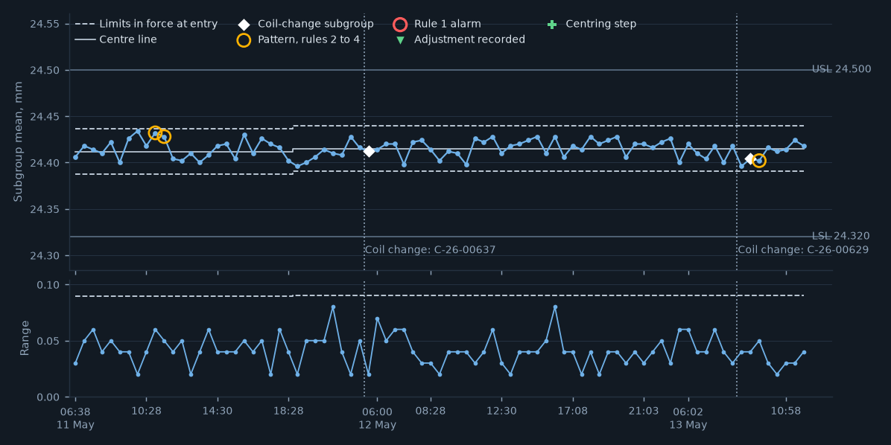
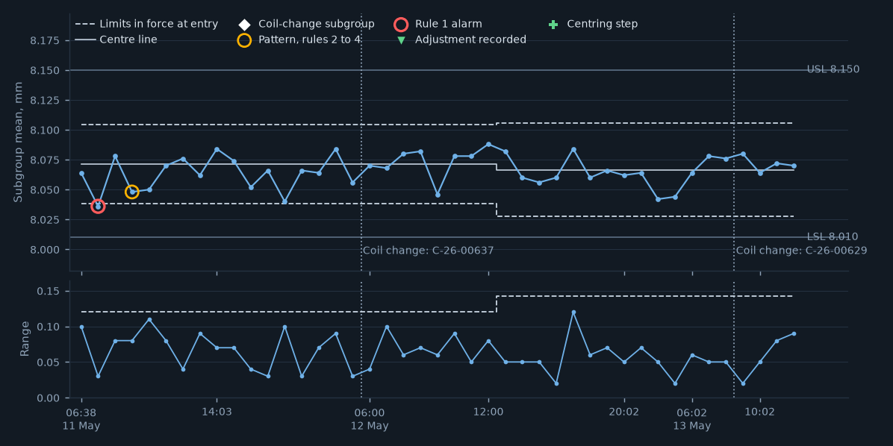
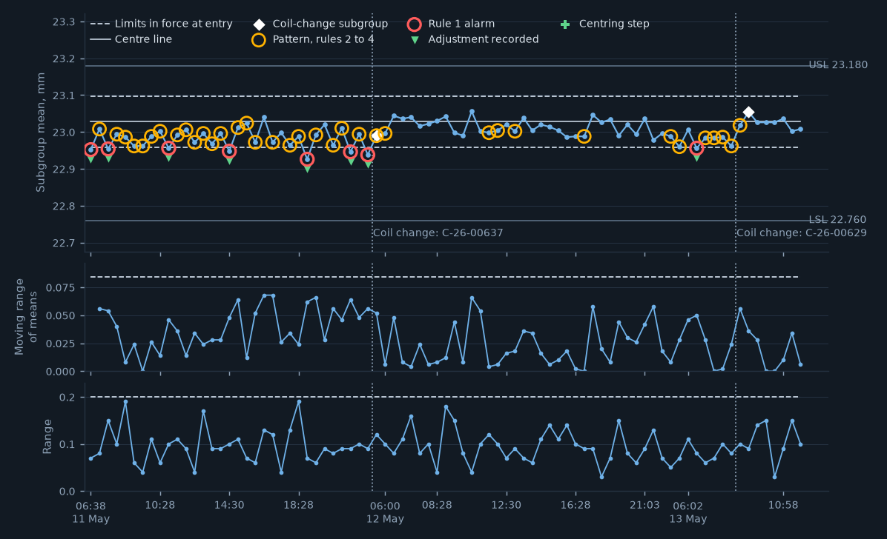
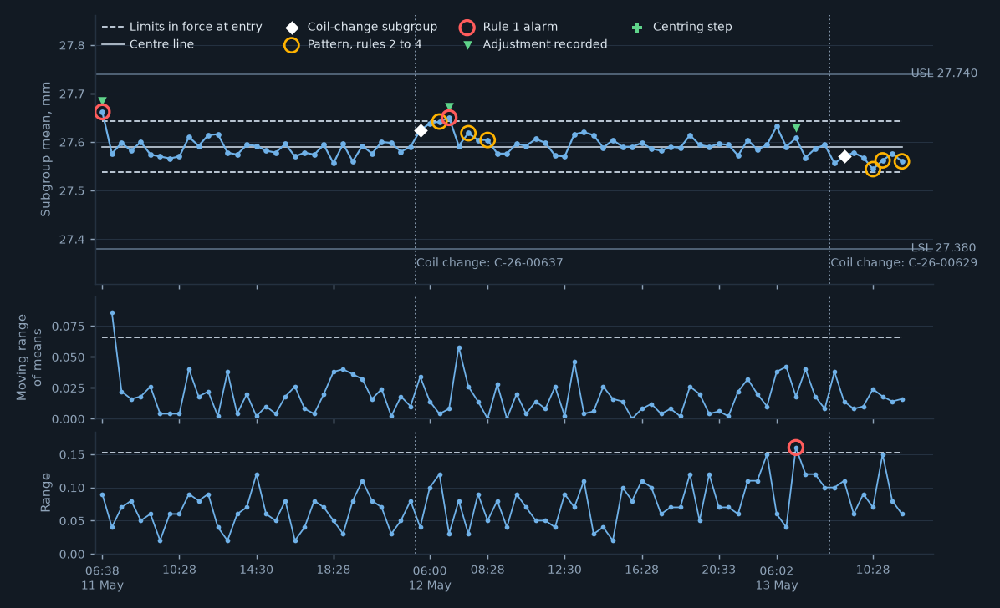
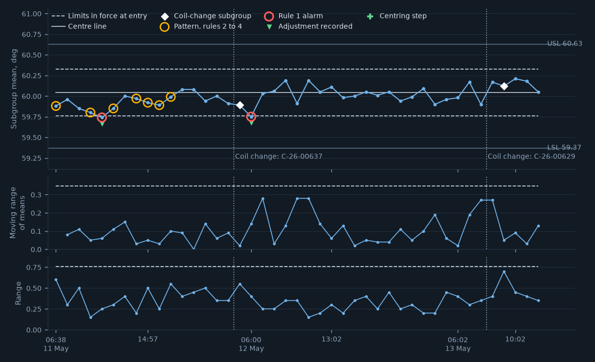

| Characteristic and chart | Last | Status |
|---|---|---|
| C-11333-01 hole diameter A attribute check | pass 12:02 | PASS |
| C-11333-02 ◆ hole to edge B X-bar and R | 24.418 12:02 | IN CONTROL |
| C-11333-03 hole to hole C X-bar and R | 8.070 12:02 | IN CONTROL |
| C-11333-04 ◆ formed height D three-way chart | 23.008 12:02 | IN CONTROL |
| C-11333-05 ◆ formed height E three-way chart | 27.560 12:02 | PATTERN, RULES 3 AND 4 |
| C-11333-06 bend angle F three-way chart | 60.05 12:02 | IN CONTROL |
| C-11333-07 burr height (limit sample) attribute check | pass 12:02 | PASS |
| C-11333-08 burr height (burr gauge) no chart: sharpening count | 10:02 | LAB GAUGE |





| Mean | 24.418 mm | Range | 0.040 |
|---|---|---|---|
| Gauge | F-11333 | Entry | gauge-connected |
| Parts | 12:02 | Posted | 12:03:04 |
| Mean | 8.070 mm | Range | 0.090 |
|---|---|---|---|
| Gauge | F-11333 | Entry | gauge-connected |
| Parts | 12:02 | Posted | 12:03:15 |
| Subgroup | 06:58, routine |
|---|---|
| Rule 1 on | mean 8.036 mm against a lower limit of 8.038 |
| Raised | 06:59:05 |
| Acknowledged | 07:01:38 by E-1003 |
| Text | step 3: die setter adjusted per the plan, 5 parts rechecked |
| Adjustment | none recorded |
| Mean | 23.008 mm | Range | 0.100 |
|---|---|---|---|
| Gauge | F-11333 | Entry | gauge-connected |
| Parts | 12:02 | Posted | 12:03:07 |
| Subgroup | 06:33, routine |
|---|---|
| Rule 1 on | mean 22.956 mm against a lower limit of 22.959 |
| Raised | 06:34:07 |
| Acknowledged | 06:37:16 by E-1003 |
| Text | step 3: die setter adjusted per the plan, 5 parts rechecked |
| Adjustment | recorded |
| Mean | 27.560 mm | Range | 0.060 |
|---|---|---|---|
| Gauge | F-11333 | Entry | gauge-connected |
| Parts | 12:02 | Posted | 12:03:15 |
| Subgroup | 06:58, routine |
|---|---|
| Rule 1 on | range 0.160 mm against an upper limit of 0.153 |
| Raised | 06:59:33 |
| Acknowledged | 07:01:11 by E-1003 |
| Text | step 1 to 4 completed, parts held and dispositioned |
| Adjustment | recorded |
| Mean | 60.05 deg | Range | 0.35 |
|---|---|---|---|
| Gauge | F-11333 | Entry | gauge-connected |
| Parts | 12:02 | Posted | 12:03:12 |
| Subgroup | 06:00, routine |
|---|---|
| Rule 1 on | mean 59.75 deg against a lower limit of 59.76 |
| Raised | 06:00:58 |
| Acknowledged | 06:12:09 by E-1003 |
| Text | step 2: confirmed; step 3: die setter adjusted shut height, recorded |
| Adjustment | recorded |
| Time | Event | Detail |
|---|---|---|
| 06:02 | ROUTINE CHECK | 5 variable subgroups posted; 2 attribute checks, all pass |
| 06:33 | ROUTINE CHECK | 3 variable subgroups posted; 1 attribute checks, all pass |
| 06:33 | RULE 1 ALARM | C-11333-04 formed height D: mean 22.956 mm against a lower limit of 22.959 |
| 06:33 | ADJUSTMENT | C-11333-04 formed height D: adjustment recorded |
| 06:37 | ACKNOWLEDGED | C-11333-04, by E-1003: step 3: die setter adjusted per the plan, 5 parts rechecked |
| 06:58 | ROUTINE CHECK | 5 variable subgroups posted; 2 attribute checks, all pass |
| 06:58 | PATTERN | C-11333-04 formed height D: rule 3 |
| 06:58 | RULE 1 ALARM | C-11333-05 formed height E: range 0.160 mm against an upper limit of 0.153 |
| 06:58 | ADJUSTMENT | C-11333-05 formed height E: adjustment recorded |
| 07:01 | ACKNOWLEDGED | C-11333-05, by E-1003: step 1 to 4 completed, parts held and dispositioned |
| 07:31 | ROUTINE CHECK | 3 variable subgroups posted; 1 attribute checks, all pass |
| 07:31 | PATTERN | C-11333-04 formed height D: rule 3 and 4 |
| 08:06 | ROUTINE CHECK | 5 variable subgroups posted; 2 attribute checks, all pass |
| 08:06 | PATTERN | C-11333-04 formed height D: rule 3 and 4 |
| 08:32 | ROUTINE CHECK | 3 variable subgroups posted; 1 attribute checks, all pass |
| 08:32 | PATTERN | C-11333-04 formed height D: rule 3 and 4 |
| 08:58 | COIL CHANGE | C-26-00629 in force: certificate 0.985 mm, 38.2 HRB (was C-26-00637) |
| 08:58 | ROUTINE CHECK | 9 variable subgroups posted; 3 attribute checks, all pass |
| 08:58 | PATTERN | C-11333-04 formed height D: rule 4 |
| 09:29 | ROUTINE CHECK | 3 variable subgroups posted; 1 attribute checks, all pass |
| 09:29 | PATTERN | C-11333-02 hole to edge B: rule 3 |
| 10:02 | ROUTINE CHECK | 5 variable subgroups posted; 3 attribute checks, all pass |
| 10:28 | ROUTINE CHECK | 3 variable subgroups posted; 1 attribute checks, all pass |
| 10:28 | PATTERN | C-11333-05 formed height E: rule 3 |
| 10:55 | PER-STROKE STOP | EWMA on the total, stroke 246,786 |
| 10:58 | ROUTINE CHECK | 5 variable subgroups posted; 2 attribute checks, all pass |
| 10:58 | PATTERN | C-11333-05 formed height E: rule 3 |
| 11:32 | ROUTINE CHECK | 3 variable subgroups posted; 1 attribute checks, all pass |
| 11:55 | PRESS RESTARTED | punch worn and replaced; cleared by E-1031 |
| 12:02 | ROUTINE CHECK | 5 variable subgroups posted; 2 attribute checks, all pass |
| 12:02 | PATTERN | C-11333-05 formed height E: rule 3 and 4 |